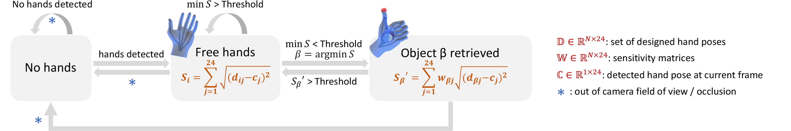

Implementation
We detail our design pipeline below with snippets from our implementation. The full Hand Interfaces Github repository can be found here.
Hardware
We implemented Hand Interfaces with an Oculus Quest (first generation) which was connected to a PC (with an AMD Ryzen 7 3700 CPU and a RTX 3070 8G GPU) using a USB 3.0 Type-C cable. Four built-in cameras on the Quest enables hand tracking in real-time. We used two Oculus Touch Controllers to implement baseline designs in our user studies.
Design Pipeline
Hand Interfaces software was built on Unity platform (2020.3.7f1 ver) and is summarized in the pipeline above. First, the system initializes at the state of "no hand" before Oculus hand tracking finds any hands in the field of view. Once hands are found, our software transitions to the "free hand" state. In this state, Oculus hand tracking returns the positions of all hand key points at ~35 FPS. With this data stream, our back-end algorithms continuously compute the similarity between the current hand pose and all gesture templates in the current application's gesture set. The i here refers to any gesture template in the dataset, which can be either designed by authors of the application in advance, or defined by users during run time. The N denotes the number of gesture templates in the dataset. The difference score Li is calculated by a sum of Euclidean distances per pair of 24 joints each hand between the current gesture and the ith gesture. Therefore, the more similar the current gesture is to a gesture template, the smaller the difference score is.
Our algorithms keep track of the minimal difference score in the gesture map. If minL is higher than a pre-defined threshold, the software stays at the "free hand" state. Once minL falls below the threshold, the software transitions to the "object retrieved" state as the algorithms determine object/gesture β is retrieved/detected where β = argminS.
When the current state is "object retrieved", users can interact with the current virtual object. We introduced a weighted distance score L'β using sensitivity matrices Wβ, each of which is tuned for specific Hand Interfaces designs to make the software less likely to dismiss the object while users are interacting with it. Specifically, the sensitivity matrices assign lower weights for key points that are supposed to move around during interactions, and higher weights for static key points. If L'β is greater than the threshold, the software dismisses the object and transitions back to the "free hand" state.
Once objects are retrieved, the software tracks multiple key points on the imitating hand for positioning and orienting the virtual objects. Specifically, the bottom of the palm determines where the object is. Other key points decide the orientations of virtual objects and, in some designs, positions of their parts (e.g., the intermediate and proximal phalange bones control where the keys are in the Kalimba design). For Hand Interfaces that involve both hands to imitate objects (e.g., Book) we duplicate the hand tracking and heuristics for the other hand. For Hand Interfaces that require the other hand to manipulate virtual objects, we detect touch by tracking Euclidean distances between key points of the manipulating fingers and the imitated object parts that are supposed to be moved around. Below we categorize our detection methods by the interaction designs and describe each with more details:
- For designs that rely on discrete hand poses users need to perform (e.g Scissors). We use the same software described above. For example, once the index and middle fingers are detected as parallel and touching in the Scissors hand pose, the action of cutting is performed.
- For designs that involve proximity-based interactions (e.g., Binoculars), we check distances between the anchoring points on the imitating hands and those on objects in the environment. For example, the Binoculars design presents users a long-range view when the Binoculars are raised up close to users' eyes.
- For designs that users click (e.g., Globe, Toggle switch), we continuously monitor the distance between joints of the manipulating hand and joints of the imitating hand. We detect clicks by looking for patterns of "approach, touch, and no touch". We hard coded the distance threshold to distinguish between touch and no touch to 7 mm.
- For designs that feature handle-like interactions (e.g., Joystick and Fishing rod), we again monitor distances between touching joints and touched joints, in addition to which we also detect "approach, grasp, and movement". In other words, we track if the interacting hand performs manipulations on top of tracking clicks. There are designs that rely on more complicated manipulating hand poses such as Inflator and Spray can, which involve more complicated detection heuristics consisting of simpler ones used in previous designs.
Additionally, we fine tuned thresholds for the difference score and sensitivity matrices of each Hand Interfaces design for a precise detection. We implemented a hysteresis buffer of 200 milliseconds of retrieval results to improve robustness. We also cached latest frames of hand tracking which we used to replace current frames to remove jitters in Oculus hand tracking, which could happen during brief occlusions.